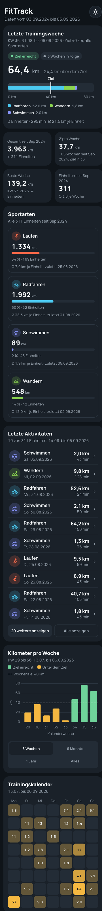
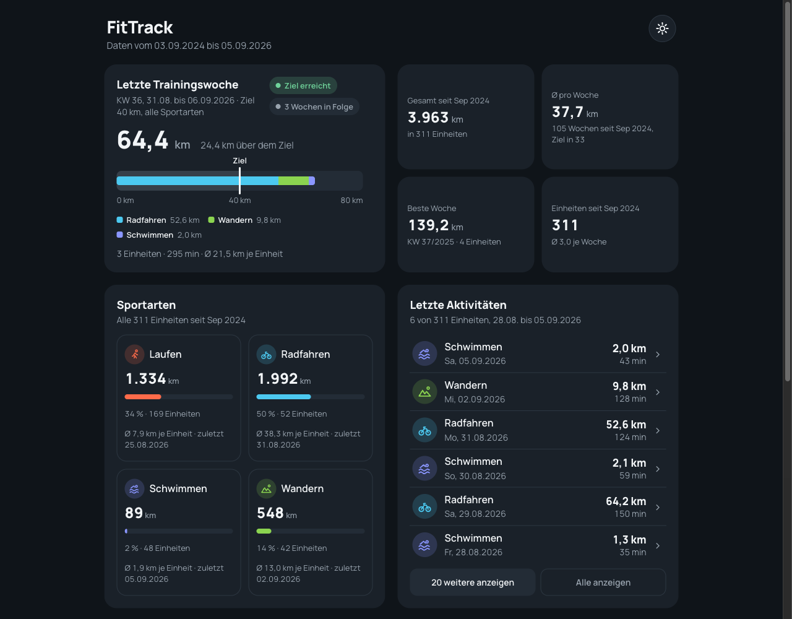

GET / liefert die Seite; bei 375 px Breite kein horizontales Scrollen; Karten stapeln sich; Touch-Targets mindestens 44 px.Die drei Stories
US-4 · Dashboard. Als Nutzer möchte ich die App auf dem Smartphone öffnen und ein übersichtliches Dashboard sehen. Akzeptanz:
US-5 · Kennzahlen und Liste. Als Nutzer möchte ich meine Kennzahlen und die letzten Trainings sehen. Akzeptanz: Kennzahl-Karten und Liste werden per fetch aus
/api/stats und /api/workouts gefüllt, nichts ist hartkodiert.US-6 · Wochenverlauf. Als Nutzer möchte ich meinen Wochenverlauf als Balkendiagramm sehen und den Zeitraum wählen. Akzeptanz:
GET /api/stats/wochen liefert je Kalenderwoche distanz_km und anzahl, auch für Wochen ohne Training; das Diagramm zeigt diese Daten; Umschalter 8 W / 6 M / 1 J / Alles.Das Ergebnis

375 px breit, Stand nach Lab 10: Wochenkarte, Kacheln, Verlauf, Kalender, Sportarten und Liste stapeln sich.

Ab 768 px: dieselben Bausteine in zwei Spalten. Ein Breakpoint, kein zweites Stylesheet.
Die Bilder zeigen den Zweitentwurf
Die Prompts in diesem Lab erzeugen den Erstentwurf mit Wochenziel-Ring und gestapeltem Diagramm. Genau so sah das Dashboard nach US-6 aus, und genau so bestand es alle Tests. Was daran trotzdem falsch war und wie der Zweitentwurf entstand, ist Lab 10.
| Bereich | Zeigt | Quelle |
|---|---|---|
| Wochenkarte | Jüngste Woche im Datensatz gegen ein Ziel von 40 km, dazu km, Einheiten, Minuten. Im Erstentwurf ein Ring, seit Lab 10 ein Bullet-Graph | letzter Eintrag von /api/stats/wochen |
| Kennzahl-Kacheln | Gesamt-km, km pro Woche, Lieblingssport, Einheiten | /api/stats |
| Diagramm | km je Kalenderwoche, Umschalter 8 W / 6 M / 1 J / Alles | /api/stats/wochen, Filter im Browser |
| Letzte Aktivitäten | Zehn jüngste Einheiten, „Mehr anzeigen“ lädt weitere aus der geladenen Liste | /api/workouts |
Mobile-first in drei Regeln
1 · Schmal zuerst gestalten
Basis-CSS für enge Bildschirme, danach @media (min-width: 768px) für Tablet und Desktop. Wer
groß beginnt und verkleinert, verteilt Ausnahmen über das ganze Stylesheet.
2 · Flexible Raster statt fester Breiten
Karten nehmen 100 % Breite und stapeln sich von selbst. Grid und Flexbox, keine Pixelbreiten.
3 · Daumenfreundlich bleiben
Touch-Targets mindestens 44 px, Schrift mindestens 16 px, sonst zoomt das Gerät beim Antippen.
Prüfpunkt in der Abnahme
Bei einer Breite bis 480 px darf es keinen waagerechten Scrollbalken geben. In den Browser-Entwicklerwerkzeugen
prüft das die Gerätesimulation, oder document.documentElement.scrollWidth in der Konsole.
Entscheidend ist der Test auf dem Handy im WLAN.
Architektur des Frontends
flowchart LR
subgraph Browser["Smartphone / Browser"]
UI["index.html + style.css
Struktur und Gestaltung"]
JS["app.js
fetch, Rendern, Chart.js"]
end
subgraph Server["FastAPI (ein Prozess)"]
API["/api/workouts
/api/stats
/api/stats/wochen"]
STATIC["StaticFiles → frontend/"]
end
STATIC -- "GET /" --> UI
UI --> JS
JS -- "GET /api/…" --> API
Derselbe Server liefert die drei statischen Dateien und die API. Der Mount für
frontend/ steht nach den Routen, sonst fängt er /api/… ab.Erst die Seite, dann die Daten
Ein Aufruf des Dashboards läuft in zwei Phasen. In der ersten liefert FastAPI nur Dateien aus, dabei wird nichts
gerechnet. In der zweiten fragt app.js die API, und erst dort liest das Backend aus der Datenbank
und rechnet. FastAPI ist also das Backend und zugleich der Auslieferer des Frontends, ein einziger Prozess.
sequenceDiagram
autonumber
participant B as Browser
participant F as FastAPI (uvicorn)
participant D as daten.py
participant DB as fittrack.db
rect rgb(249, 240, 220)
Note over B,F: Phase 1: Auslieferung, nichts wird gerechnet
B->>F: GET /
F-->>B: index.html, style.css, app.js (StaticFiles)
end
rect rgb(247, 236, 238)
Note over B,DB: Phase 2: app.js holt die Daten per fetch
B->>F: fetch("/api/stats")
F->>D: lade_workouts()
D->>DB: SELECT … FROM v_workout
DB-->>D: Zeilen
D-->>F: Liste von Dictionaries
F-->>B: JSON: gesamt_km, durchschnitt, lieblingssportart, anzahl
B->>B: zeigeKennzahlen(stats)
end
Derselbe Prozess beantwortet beide Phasen. Für
/api/workouts und /api/stats/wochen wiederholt sich Phase 2 mit anderen Funktionen.| Umgebung | Seite kommt von | fetch geht an |
|---|---|---|
| Entwicklung | http://localhost:8000 | http://localhost:8000/api/stats |
| Handy im WLAN | http://192.168.x.y:8000 | http://192.168.x.y:8000/api/stats |
| Render | https://fittrack-k7gg.onrender.com | https://fittrack-k7gg.onrender.com/api/stats |
Die Adresse steht nirgends im Code
fetch("/api/stats") ist ein relativer Pfad. Der Browser hängt ihn an die Adresse, von der die Seite
kam. Deshalb läuft derselbe app.js unverändert auf dem eigenen Rechner, im WLAN und bei Render. Und
deshalb reicht GitHub Pages für die App nicht: Pages könnte Phase 1 erledigen, aber niemand würde Phase 2
beantworten.
Warum kein Framework
Kein React, kein Build-Schritt. Drei Dateien, die jede Person in der Gruppe lesen kann, und ein Diagramm aus einer Bibliothek per CDN. Der Preis ist etwas mehr Handarbeit, der Gewinn ist, dass nichts verdeckt, was darunter geschieht. Für ein Kursprojekt ist das der richtige Zuschnitt.
US-4: Gerüst und Stylesheet
Test zuerst, auch für das Frontend. Der Test prüft, dass FastAPI die Seite ausliefert.
# US-4: Frontend wird von FastAPI ausgeliefert
def test_index_liefert_html():
antwort = client.get("/")
assert antwort.status_code == 200
assert "text/html" in antwort.headers["content-type"]
assert "FitTrack" in antwort.text
Du bist ein erfahrener Frontend-Entwickler. Wir bauen das Dashboard einer
Fitness-App namens FitTrack: reines HTML, CSS und Vanilla JS ohne Build-Step.
Vorbild sind die Dashboards von Garmin Connect, Apple Fitness und RingConn:
dunkler Hintergrund, abgerundete Karten, große Kennzahlen, ruhige Typografie.
Aufgabe, Teil 1 von 3: nur die Struktur und das Stylesheet, noch keine Daten.
frontend/index.html mit folgenden Bereichen von oben nach unten, alle
Werte vorerst als Platzhalter „…“:
1. Kopf: Titel „FitTrack“ und ein <p id="zeitraum">
2. <section id="woche">: Wochenziel-Ring. Ein SVG-Kreis (r=52 in einem
120er viewBox) mit <circle id="ring-balken">, daneben eine
Definitionsliste mit <dd id="woche-km">, <dd id="woche-anzahl">,
<dd id="woche-minuten">. Titel <h2 id="woche-titel">,
Untertitel <p id="woche-untertitel">.
3. <section id="kennzahlen">: vier Kacheln im 2er-Raster mit den ids
stat-gesamt, stat-woche, stat-sport, stat-anzahl
(Beschriftungen: Gesamt, Pro Woche, Lieblingssport, Einheiten)
4. <section id="diagramm">: Titel „Kilometer pro Woche“, vier Buttons
„8 W“, „6 M“, „1 J“, „Alles“ mit data-wochen="8|26|52|0", darunter
<canvas id="wochen-chart"> in einem Container mit fester Höhe 200 px
5. <section id="aktivitaeten">: Titel „Letzte Aktivitäten“,
<ol id="aktivitaeten-liste">, Button <button id="mehr-anzeigen" hidden>
frontend/style.css:
- CSS Custom Properties in :root für alle Farben: --bg #0f1419,
--karte #1a2129, --karte-hell #232c36, --linie #2c3641, --text #f2f5f7,
--text-2 #8c98a4, --akzent #f5b841, dazu --laufen #ff6b4a,
--radfahren #4cc9f0, --schwimmen #7b8cff, --wandern #8bd450
- Schrift Manrope (Google Fonts) mit system-ui als Fallback,
font-size 16px, font-variant-numeric: tabular-nums
- Mobile zuerst: eine Spalte, max-width 480px, Karten 100 % breit,
border-radius 20px, kein Schatten
- Alle Buttons mindestens 44px hoch
- Ein Breakpoint @media (min-width: 768px): zwei Spalten per CSS Grid
mit grid-template-areas, Diagramm und Liste nebeneinander
- Der Ring: stroke-dasharray 327 (Umfang bei r=52), stroke-dashoffset 327,
SVG um -90deg gedreht, damit der Balken oben startet
- Sportart-Farbe über [data-sport="Laufen"] { --sport-farbe: var(--laufen) }
usw., damit Listenzeilen später die Farbe per Attribut bekommen
Randbedingungen:
- <meta name="viewport" content="width=device-width, initial-scale=1">
- Keine Bilder, keine Emojis, kein Framework, kein Tailwind
- Kurze deutsche Kommentare, die einem Anfänger erklären, warum
- Noch kein JavaScript in diesem Schritt
Gib beide Dateien vollständig aus. Erkläre in drei Sätzen, wie das
Mobile-First-Prinzip im CSS umgesetzt ist.
Dann liefert FastAPI die Seite aus. Ein kurzer zweiter Prompt, oder drei Zeilen von Hand:
from fastapi.staticfiles import StaticFiles
FRONTEND_ORDNER = Path(__file__).parent.parent.parent / "frontend"
# Das Frontend liegt als statische Dateien im Ordner frontend/. Der Mount muss
# NACH den API-Routen stehen, sonst fängt er alle Anfragen ab.
app.mount("/", StaticFiles(directory=FRONTEND_ORDNER, html=True), name="frontend")
US-5: Daten per fetch
Kein pytest-Test für JavaScript im Kurs, die Abnahme läuft am Gerät. Frage an die Gruppe: Wie würde man das automatisieren? Stichwort Playwright, als Ausblick.
Du bist ein erfahrener Frontend-Entwickler. FitTrack-Dashboard, Teil 2 von 3.
Es gibt eine index.html mit diesen Elementen (Auszug der ids):
- #zeitraum (p im Kopf)
- #stat-gesamt, #stat-woche, #stat-sport, #stat-anzahl (Kennzahl-Kacheln)
- #aktivitaeten-liste (ol), #mehr-anzeigen (button, anfangs hidden)
Listenzeilen bekommen die Farbe per Attribut data-sport="Laufen" usw.
Die API liefert:
GET /api/stats ->
{"gesamt_km": 3963.0, "durchschnitt_km_pro_woche": 37.7,
"lieblingssportart": "Radfahren", "anzahl": 311}
(lieblingssportart kann null sein)
GET /api/workouts -> Liste, jüngstes Datum zuerst:
{"id": 311, "datum": "2026-09-05", "sportart": "Schwimmen",
"dauer_min": 43, "distanz_km": 2.0, "kalorien": 614}
Aufgabe: Erstelle frontend/app.js mit
- ladeJson(url): fetch, wirft bei Status != 200 einen Fehler
- formatDatum("2026-09-05") -> "05.09.2026"
- formatZahl(wert, nachkommastellen): deutsche Schreibweise per toLocaleString
- zeigeKennzahlen(stats): füllt die vier Kacheln
- zeigeAktivitaeten(workouts): zeigt die ersten 10 Einheiten als <li>
mit data-sport, einem Kürzel im Kreis (La, Ra, Sc, Wa), Sportart,
Datum, Distanz, Dauer und Kalorien. Der Button „Mehr anzeigen“ hängt
jeweils 10 weitere an und verschwindet, wenn alle sichtbar sind.
- zeigeZeitraum(workouts): schreibt „<ältestes> bis <jüngstes>“ in #zeitraum
- start(): ruft alles auf; wenn ein fetch fehlschlägt, steht im
betroffenen Bereich ein kurzer Hinweis „… konnten nicht geladen
werden. Läuft der Server?“ und der Rest lädt trotzdem.
- Am Ende: start();
Randbedingungen:
- Vanilla JS, keine Bibliothek, kein Modul-Bundler, async/await
- Kleine Funktionen mit deutschen Namen, je ein Kommentar auf Deutsch
- Keine Werte hartkodieren, alles kommt aus der API
- In index.html vor </body> ergänzen: <script src="app.js"></script>
Gib app.js vollständig aus und erkläre in drei Sätzen, wie „Mehr anzeigen“
funktioniert, ohne die API erneut zu fragen.
US-6: Wochenverlauf
Zwei Teile: erst der Endpunkt mit Test, dann Ring und Diagramm. Die Erwartungswerte wieder von Hand: KW 23 hat 34,5 km in 4 Einheiten und 175 Minuten, KW 24 ist leer, KW 25 hat 53,0 km in 4 Einheiten und 285 Minuten.
# US-6: Wochenverlauf
def test_wochen_anzahl_und_luecken():
wochen = client.get("/api/stats/wochen").json()
assert len(wochen) == 3
assert [w["kw"] for w in wochen] == ["2026-W23", "2026-W24", "2026-W25"]
assert wochen[1] == {"kw": "2026-W24", "wochenstart": "2026-06-08",
"distanz_km": 0.0, "anzahl": 0, "dauer_min": 0}
def test_wochen_summen():
wochen = client.get("/api/stats/wochen").json()
assert wochen[0]["wochenstart"] == "2026-06-01"
assert wochen[0]["distanz_km"] == 34.5
assert wochen[0]["anzahl"] == 4
assert wochen[0]["dauer_min"] == 175
assert wochen[2]["distanz_km"] == 53.0
assert wochen[2]["anzahl"] == 4
assert wochen[2]["dauer_min"] == 285
def test_wochen_leer(monkeypatch):
from app import main
monkeypatch.setattr(main, "lade_workouts", lambda: [])
assert client.get("/api/stats/wochen").json() == []
Du bist ein erfahrener Python-Entwickler. FitTrack, FastAPI. In
backend/app/statistik.py gibt es bereits:
from collections import defaultdict
from datetime import date, timedelta
def montag_der_woche(datum_text: str) -> date:
tag = date.fromisoformat(datum_text)
return tag - timedelta(days=tag.weekday())
Workouts sind Dictionaries mit id, datum (ISO), sportart, dauer_min,
distanz_km, kalorien.
Aufgabe: Ergänze berechne_wochen(workouts: list[dict]) -> list[dict].
Rückgabe: eine Liste aufsteigend nach Woche, ein Eintrag pro Kalenderwoche
von der ersten bis zur letzten Trainingswoche. Wochen ohne Training
erscheinen mit Nullwerten. Jeder Eintrag:
{"kw": "2026-W23", "wochenstart": "2026-06-01",
"distanz_km": 34.5, "anzahl": 4, "dauer_min": 175}
kw ist Jahr und ISO-Woche zweistellig, wochenstart der Montag als ISO-Datum,
distanz_km auf 1 Nachkommastelle gerundet. Leere Liste ergibt [].
Dazu ein Pydantic-Modell WochenEintrag in models.py und in main.py die Route
GET /api/stats/wochen mit response_model=list[WochenEintrag], die
berechne_wochen(lade_workouts()) zurückgibt.
Randbedingungen: nur Standardbibliothek und Pydantic, deutsche Namen,
je ein Docstring. Diese Tests müssen bestehen:
[die drei Tests von oben einfügen]
Erkläre in drei Sätzen, wie du die Lücken erzeugst.
Du bist ein erfahrener Frontend-Entwickler. FitTrack-Dashboard, Teil 3 von 3.
In frontend/app.js gibt es bereits ladeJson(url), formatDatum(iso),
formatZahl(wert, nachkommastellen), zeigeFehler(bereichId, text) und eine
Funktion start(), die /api/stats und /api/workouts lädt.
Neu ist GET /api/stats/wochen -> Liste aufsteigend, ein Eintrag je Woche:
{"kw": "2026-W36", "wochenstart": "2026-08-31",
"distanz_km": 64.4, "anzahl": 3, "dauer_min": 295}
In index.html gibt es:
- #woche-titel (h2), #woche-untertitel (p), #ring-prozent (span),
#ring-balken (SVG-circle, r=52, stroke-dasharray und stroke-dashoffset 327),
#woche-km, #woche-anzahl, #woche-minuten (dd)
- #wochen-chart (canvas) und vier Buttons .zeitraum-wahl button mit
data-wochen="8", "26", "52", "0" (0 = alle); der aktive hat class="aktiv"
- Chart.js 4 ist per <script> vor app.js eingebunden:
https://cdn.jsdelivr.net/npm/chart.js@4.4.9/dist/chart.umd.min.js
Aufgabe, ergänze app.js:
1. Konstanten WOCHENZIEL_KM = 40 und RING_UMFANG = 327.
2. zeigeWoche(wochen): nimmt den letzten Eintrag (jüngste Woche im
Datensatz). Titel „Kalenderwoche 36“, Untertitel „ab 31.08.2026,
Wochenziel 40 km“. Prozent = distanz_km / Ziel, Text zeigt den echten
Wert (auch über 100 %), der Ring ist bei 100 % voll:
strokeDashoffset = RING_UMFANG * (1 - min(anteil, 1)). km, Anzahl,
Minuten in die dd-Felder.
3. zeigeDiagramm(wochen, anzahlWochen): Balkendiagramm mit Chart.js.
anzahlWochen > 0 -> die letzten n Wochen, 0 -> alle. Beim ersten Aufruf
das Chart erzeugen und in einer Variablen merken, bei weiteren Aufrufen
nur Daten tauschen und update() aufrufen. Ohne Legende, x-Achse ohne
Beschriftung, y-Achse ab 0 mit höchstens 5 Ticks, Balkenfarbe aus der
CSS-Variablen --akzent (per getComputedStyle lesen), Tooltip
„Kalenderwoche 36“ und „64,4 km“. maintainAspectRatio: false.
4. verbindeZeitraumWahl(wochen): Klick setzt die Klasse aktiv um und
ruft zeigeDiagramm mit Number(button.dataset.wochen) auf.
5. In start(): zuerst /api/stats/wochen laden, dann zeigeWoche,
zeigeDiagramm(wochen, 8), verbindeZeitraumWahl; Fehler wie bisher
mit zeigeFehler("woche", ...).
Randbedingungen: Vanilla JS, deutsche Namen und Kommentare, keine Werte
hartkodieren außer den zwei Konstanten. Gib nur die neuen und geänderten
Funktionen aus. Erkläre in drei Sätzen, warum das Chart beim Umschalten
nicht neu erzeugt wird.
Prüfpunkte für die Antworten
- Viewport-Meta vorhanden? Ohne sie zeigt das Handy eine geschrumpfte Desktop-Seite.
- Feste Breiten in Pixeln?
width: 400pxist ein Verstoß gegen Regel 2. - Mount nach den Routen? Steht
app.mount("/")vor/api/…, schlagen alle Tests außer dem für/fehl. Das lässt sich live zeigen. - Steht eine Zahl im JavaScript, die aus der API kommen müsste? Dann ist US-5 verfehlt.
- Server aus, Seite neu laden: Erscheint der Hinweistext, oder bleibt alles bei „…“?
- Wird bei jedem Klick ein neues Chart erzeugt? Dann meldet die Konsole „Canvas is already in use“.
- Sind die Balken echte Daten? Eine Distanz in
fittrack.dbändern, neu laden, das Diagramm ändert sich. Danachgit checkout backend/app/data/fittrack.db.
Übungen
Vier Übungen: Mobile-first, Bereiche und Endpunkte, Mount und Chart, dann die Abnahme am Smartphone.
Zusammenfassung
- Drei Dateien, kein Build-Schritt, Chart.js per CDN. Jede Zahl kommt aus einem der drei Endpunkte.
- Mobile zuerst, ein Breakpoint bei 768 px, Touch-Targets 44 px, Schrift 16 px.
- FastAPI liefert das Frontend als statische Dateien aus. Der Mount steht nach den Routen.
- Der Wochenverlauf hat einen eigenen Endpunkt mit Test. Lückenwochen kommen mit Nullwerten, der Zeitraumfilter läuft im Browser.
- Das Chart wird einmal erzeugt und danach aktualisiert.